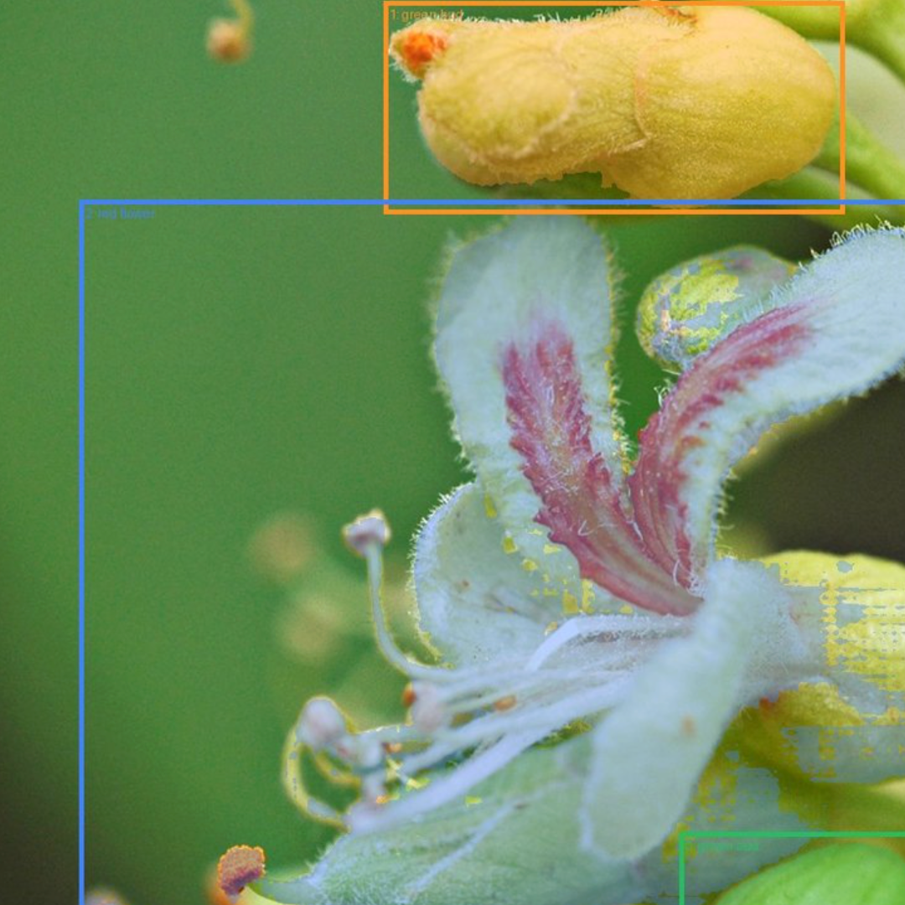

Plant Recognition System
I own the CV/ML stack.
Owning the CV/ML stack for a Pokémon Go–style mobile plant discovery and species identification system.
I build how it makes decisions online.
Building the online inference pipeline, using EfficientNet and a multi-agent system to extract localized morphological and color features, triage images based on confidence and visual evidence, and ground species predictions in a botanical knowledge graph.
I build how we measure and improve it offline.
Building the offline pipeline to diagnose model failures through representation analysis, clustering, and segmentation, then fine-tuning models to improve accuracy on a large-scale plant image dataset.
I ship it under real production constraints.
Deploying the end-to-end system to the mobile app for real-time user interactions, routing easy cases through lightweight on-device inference and hard cases to cloud models to balance latency, cost, and accuracy.